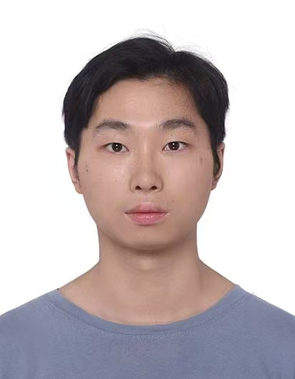

An Explicit Optimal Separation of BPP from NP in Number-on-Forehead Communication Complexity
Manuscript, 2026

I am a second-year Ph.D. student in Computer Science at the Pennsylvania State University, where I am very fortunate to be advised by Prof. Pei Wu.
My current research focuses on communication complexity and quantum algorithms. I’m also interested in AI for Science, particularly in exploring how AI tools can reshape the way theoretical research is conducted.
Before joining Penn State, I completed a B.S. in Mathematics with a minor in Computer Science and an M.E. in Computer Engineering at USTC, where I was advised by Prof. Xue Chen.
Authors are listed in alphabetical order unless otherwise stated.
Manuscript, 2026
Manuscript, 2026
Manuscript, 2026
MFCS, 2026